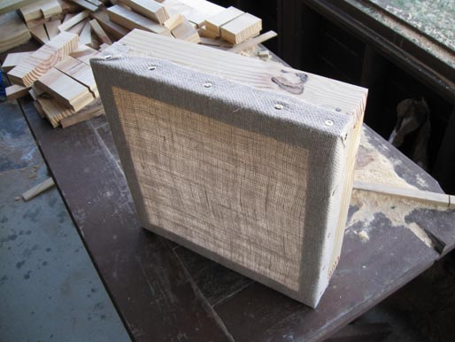

Warré Hive Construction
"Smallholders and farmers capable of keeping bees should be enabled to keep bees successfully with this simple hive that they can easily make themselves, without significant outlay on materials, without specialist knowledge, money or labour, without machines or gadgets, without using sugar or foundation, and in a purely natural manner."
― Johann Thür, Bienenzucht. Naturgerecht einfach und erfolgsicher (1946)
GUIDING PRINCIPLES
Simple hives constructed of natural materials.
Natural comb supported by top-bars without the use of foundation. Both comb and brood area able to grow as the colony develops.
Separation barriers not used as integral elements.
Overpopulation avoided by limiting hives to a sustainable number for the locality.
The swarm process not suppressed.
No manipulation of the drone population.
Nest scent and heat retained within the hive. Manipulations avoided to preserve the unity of the colony. Hive activities observed at the entrance and by listening to the bees.
No foreign substances, medications or chemicals used within the hive.
Natural selection encouraged through the survival of the healthiest colonies capable of productivity without intervention.
Conservative honey harvesting practiced to allow bees to winter on their honey stores.
HIVE BOX CONSTRUCTION
For strength and durability Southern Yellow Pine 2"x10" dimension lumber is used to make the Hive Boxes.
The Hive Box boards are cut 21 cm wide and planed to 3 cm thick.
To create internal dimensions of 30 cm x 30 cm x 21 cm the Hive Box side boards are cut to a length of 36 cm. Hive Box front and rear boards are cut to a length of 30 cm.
Rabbets for the top-bars are cut in the front and rear Hive Box boards on the table saw.
The rabbets are cut 1 cm x 1 cm.
Plate joining biscuits are used to align the Hive Box boards.
The Hive Box boards are glued with FDA approved waterproof glue and clamped.
The Hive Box joints are strengthened with 8d galvanized spiral shank nails.
TOP-BAR CONSTRUCTION

Quartersawn white oak is ripped into 24 mm x 9 mm strips for the top-bars. White oak is used to ensure the top-bars remain rigid. Any top-bar flexure will cause comb failure.
White oak top-bars are cut to a length of 318 mm. A centered saw kerf cut is made lengthwise in the bottom of the top-bar. Cedar starter stips are cut to insert in the saw kerf cut.
Cedar starter strips are secured into the top-bar with FDA approved glue.
The starter strips are cut to extend 5-6 mm (one cell height) below the bottom edge of the top-bar. The bottom of the top-bar is rough so the wax will adhere better.

The top-bars are spaced with 12 mm gaps and secured with wire brads within the hive box rabbets. The notched ends allow the top-bars to be easily removed.
QUILT BOX CONSTRUCTION
The Quilt Box boards are cut 10 cm wide and planed to 3 cm thick. To create proper internal dimensions the length is cut 35.5 cm and 29.5 cm or 5 mm less than the dimensions of the Hive Box to facilitate working.
The Quilt Box is assemblied the same as the Hive Box.

The Quilt Box bottom is covered with natural burlap.
After being set on the hive the Quilt Box is filled with eastern red cedar shavings which are resistant to rot and moth-repellent.
There are two elements of the original Warré design that are often overlooked by those inclined to focus on the more visible quilt box. Hessian sacking (burlap) is used as a top-bar cover and separates the top of the hive from the quilt box. The quilt box bottom is also made from hessian sacking (burlap). These seemingly simple crude cloths actually perform important hive functions.
The outer edges of the top-bar cloth are exposed to the exterior of the hive on all four sides. In addition the quilt box bottom hessian sacking (burlap) extends up all four exterior sides of the quilt box where it is tacked in place.
The combination of their double layer and course weave provides a breathable gap around the complete perimeter of the hive top between the hive box and quilt box. This horizontal venting at the top of the hive is in addition to any vertical air passage that occurs through the quilt box.
The weft and warp of the hessian sacking (burlap) weave provide a capillary wick from any area of the cloth to each of the hive’s four exterior perimeters.
Both cloths are exposed to the hive’s exterior but are well sheltered from the weather by the extended telescoping sides of the Warré roof design.
The subtle yet effective venting of air and moisture can be controlled by the bees thereby allowing them to preserve the all-important "Nestduftwärmebindung"!
ROOF CONSTRUCTION
Pine 1"x10" and 1"x6" dimension lumber is used to make the roof sides, front and rear boards.
The roof eave boards are cut to a length of 37 cm. The roof gable end boards are cut to a length of 41 cm. The top of the roof gable end boards are cut at 106 degrees leaving a 4 cm flat top. Plate joining biscuits are used to align the eave and gable boards. They a glued with FDA approved waterproof glue. Screws are used to strenghten the joints.

Isolating boards that prevent access of mice to the quilt are fixed to the tops of the roof eave boards.
Cedar roof clapboards are cut 23 cm wide by 52 cm long and nailed to the gable end boards.
A cedar roof cap is cut 10 cm wide by 52 cm long and attached to the roof assembly with screws.
Harware cloth is used to close the openings at the top of the gables and at the top of the eaves.
The angled part of the roof is empty and open on four faces. There is free passage of air at the top of the gables and at the top of the eaves.
More of the original website content and navigation links will be added as time allows!

This site is licensed under a Creative Commons
Attribution-NonCommercial-ShareAlike 3.0 Unported License.
Content from the original December 2008 website | updated 17 March 2014 | eccentric beekeeper